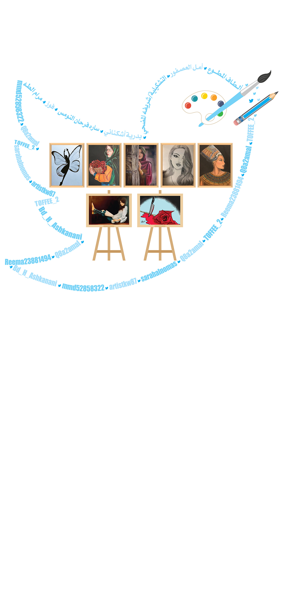

<audio id="draw" src="draw.mp3" preload="auto"></audio>

<script>

  function draw() {
        var audio = document.getElementById("draw");

        if (audio.duration > 0 && !audio.paused) {
            audio.pause();
            audio.currentTime = 0;
        } else {
            audio.play();
        }
    }

</script>


<map name="image-map">
  
  
    <area target="_blank" alt="" title="" href="" onclick="javascript:draw(); return false;" coords="635,331,947,540" shape="rect">
  
  
       <area target="" alt="" title="" href="https://twitter.com/toffee_2"coords="596,119,29" shape="rect">
       <area target="" alt="" title="" href="https://twitter.com/Q8a2amal?ref_src=twsrc%5Egoogle%7Ctwcamp%5Eserp%7Ctwgr%5Eauthor"coords="596,119,29" shape="rect">
       <area target="" alt="" title="" href="https://twitter.com/bd_h_ashkanani"coords="596,119,29" shape="rect">
       <area target="" alt="" title="" href="https://twitter.com/reema23881494"coords="596,119,29" shape="rect">
       <area target="" alt="" title="" href=""coords="596,119,29" shape="rect">
       <area target="" alt="" title="" href="https://twitter.com/sarahalnomas?lang=en"coords="596,119,29" shape="rect">
       <area target="" alt="" title="" href="https://twitter.com/artistkw87"coords="596,119,29" shape="rect">


</map>

